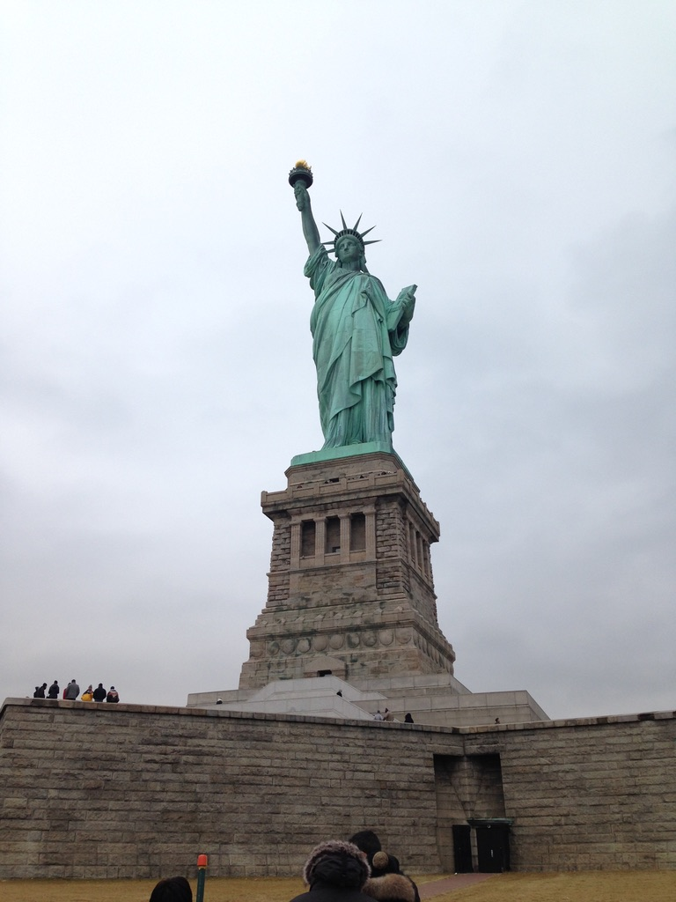

View from atop the arch at Praca do Comercio, looking out at the sea.View of red tile rooftops in Lisbon, seen from atop the arch at Praca do Comercio.My friend and I visiting Praca do Comercio.Portugal is famous for its seafood. I ate lots of squid and a lot of charcuterie as well.
Martha's Vineyard, Massachusetts
Geographical Location: New England, USA
Martha's Vineyard is an island off of the cape in Massachusetts.
Photo Gallery
Menemsha Beach is a popular place to have dinner picnics. There are seafood markets close by where people get their dinner, and then head to the beach.Fishing boats and sailboats in the water off of Menemsha Beach.There are blue, purple, white, and pink hydrangeas all over the island.
Ward, Colorado
Geographical Location: Western United States
Photo Gallery
My friends and I hiked about 6 miles up and down the Isabelle Glacier Trail.We met a chipmunk who was very interested in us.
Brussels, Belgium
Geographical Location: Central Europe
Photo Gallery
The Atomium is a large, modernist sculpture in Brussels, Belgium that was originally created for the 1958 Brussels World's Fair.
New York City, NY
Geographical Location: Mid-Atlantic, United States
Photo Gallery

I took this photo on my first trip to New York City for my 16th birthday. My family and I went to all the tourist sites, and my favorite were the museums.Since my birthday is the day before Christmas, I also got to experience New York City at Christmastime. Here is Central Park on a very sunny Christmas Day.